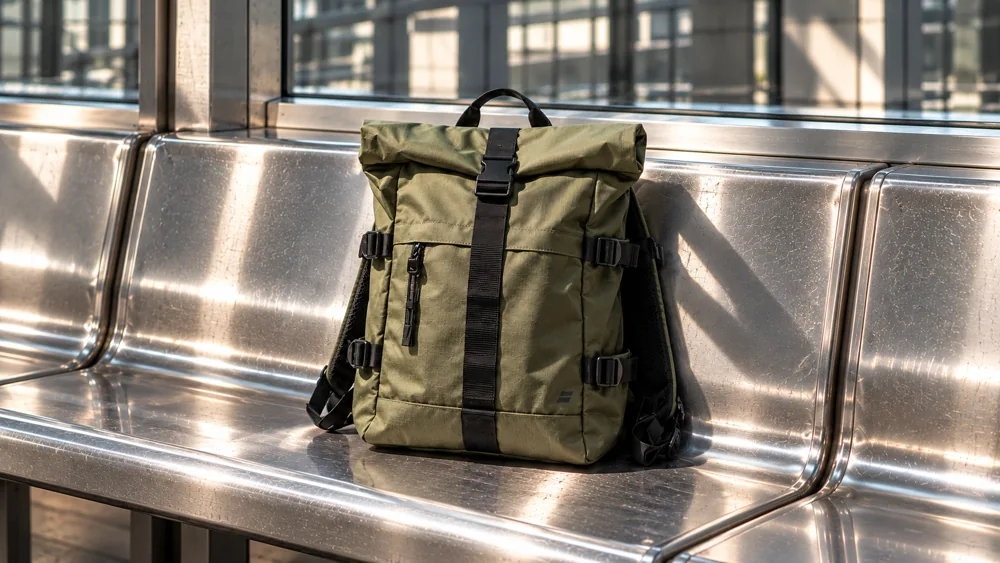

Маршрут 22
8,900 ₽22 л · Рюкзак для города и коротких поездок.
Каждому маршруту — своя форма.
От ключей и телефона до вещей на целый день. Три модели, три объёма, понятный выбор.
Сравнить модели ↗
22 л · Рюкзак для города и коротких поездок.

4 л · Самое нужное — рядом и под рукой.

16 л · Шопер для планов, которые меняются на ходу.